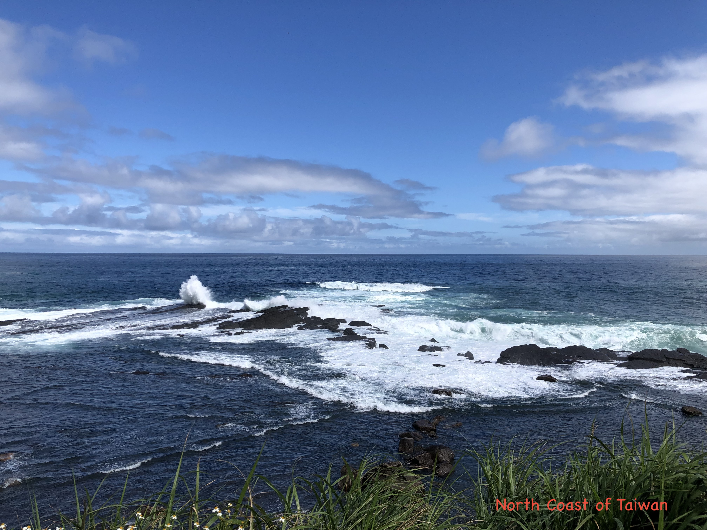

About Me
Welcome to my personal webpage
I am an astronomer, and currently employed as a support scientist at the Academia Sinica Institute of Astronomy and Astrophysics (ASIAA), Taiwan. My primary research interests are exploring star and planet formation using multiwavelength data observed
with submillimeter, radio, infrared, and optical telescopes. I take the observational challenge to detect new astronomical bodies.
I am working on the telescope installation, calibration and data processing pipeline for the BURSTT VLBI project, aiming to detect and
localize Fast Radio Burst (FRB).

Education and Background:
2023 - present: Support Scientist at Academia Sinica Institute of Astronomy and Astrophysics (ASIAA), Taiwan
2019 - 2023: Post Doc at Academia Sinica Institute of Astronomy and Astrophysics (ASIAA), Taiwan
2018 - 2019: Post Doc at Indian Institute of Science Education and Research (IISER), Tirupati, India
2012 - 2017: Ph.D. at S N Bose National Centre for Basic Sciences, India
Ph.D. Thesis: Multi-wavelength studies on Galactic H II regions
Research Interests:
The birth of young stellar system: outflow, jet, planet
Multiwavelenth (submillimeter, infrared, optical) study of star-forming regions
Observations of interferometer and single-dish telescopes
Radio instrument installation, calibration and data processing
Publications: ADS link!
Language and Skills:
Computer Language: python, C
Language: English (fluent); Hindi/Sanskrit; Bengali(first language)
software: CASA, CARTA, IRAF, TOPCAT, DS9
Contact:
Email:sdutta@asiaa.sinica.edu.tw; duttasomnath9@gmail.com
Address: ASIAA,Taipei 106216, Taiwan, R.O.C.
Research

Project I: Protostellar Jets and Outflows
Outflows and jets are the most intriguing characteristics of protostars during the accretion process.
They remove excess angular momentum from the disk surface, allowing accreting material to fall onto the star surface.
The origin and characteristics are still unclear. High-resolution and high-sensitivity observations with ALMA in the submillimeter
wavelength provides a robust opportunity to explore the characteristics of the jets. Observations of statistically significant
jets allow drawing a comprehensive picture of the jet's characteristics. A few AU scale observations with higher velocity resolution
allow to measure jet rotation as well as jet-launching radius (ref: ALMASOP project; Dutta et al 2020, 2022a, 2022b, 2024).
Project II: Radio Instrumentation and Data processing
First Radio Burst (FRB) has been a topic of immense attraction for the last few years
due to the challenges of their detection and localization. Recently, the Taiwanese FRB community launched a new radio telescope, Bustling Universe Radio Survey Telescope in Taiwan (BURSTT), dedicated for
detection and location of FRBs. I am particularly interested in their localization using very large baseline interferometric (VLBI) observations.
I am working on the installation, calibration and data processing of the telescope. I am particularly leading one BURSTT outrigger station at Raman Research Institute (RRI), Bangalore, India
Project III: Formation of Young Star Cluster
The formation of the star cluster is a topic of considerable interest since most stars in our Galaxy form in groups within clustered environments.
Several environmental conditions can breed young clusters. As molecular clouds are often composed of HII regions, bubbles, and dense filamentary structures
, understanding what shapes the molecular clouds to be dense and massive enough to form a young cluster is therefore of great interest.
Additionally, the initial cloud configuration decides the future location of cluster formation.
Therefore, the exact role of environment on the star and star cluster formation of a cloud can only be thoroughly understood by tracing various components of the interstellar medium
(ISM) through multiwavelength observations. We utilize multiwavelength (sub-millimeter, radio 1.4 GHz, infrared, optical) observed data to explore the star and star cluster formation
(ref: Dutta et al. 2015, 2018b)
Project IV: Time-Series photometry of young objects
Photometric variability is a ubiquitous characteristic of young stars.
In a binary system, two components eclipse one another periodically, resulting in a change in the apparent brightness of the system.
Furthermore, various temporal phenomena such as flare-like activity on the corona, circumstellar disc extinction due to disc asymmetry,
variable accretion rates, etc., can lead to aperiodic variability of young stars. Potentially, variability explores the young stars in the field population.
We performed optical monitoring of young star clusters with optical telescopes to explore the variability characteristics of the young stars
(ref: Dutta et al. 2018a, 2019)
.
Publications
- Dutta S., Lee C.-F., Johnstone D., Lee J.-E., Hirano N., Di Francesco J., Moraghan A., et al.,
"ALMA Survey of Orion Planck Galactic Cold Clumps (ALMASOP): Molecular Jets and Episodic Accretion in Protostars" ;
2024, Astronomical Journal, 167, 72; DOI 10.3847/1538-3881/ad152b
Contact
Email:
Address: